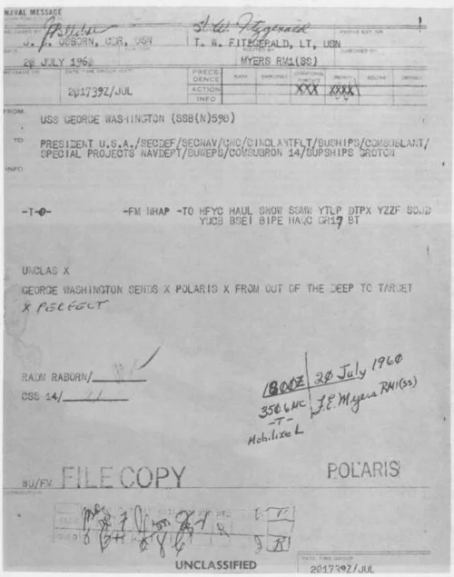
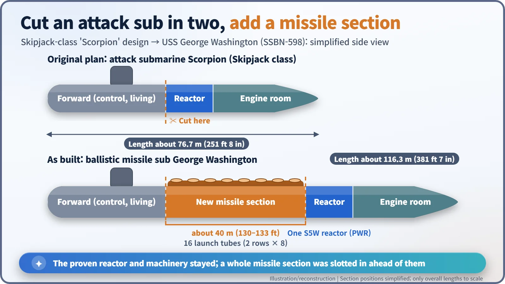
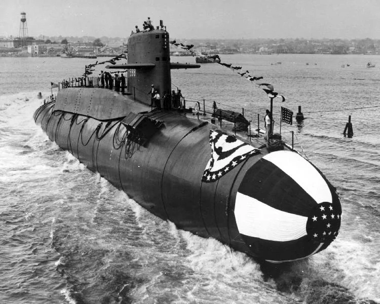
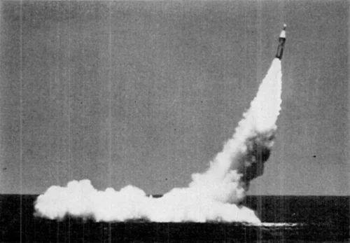
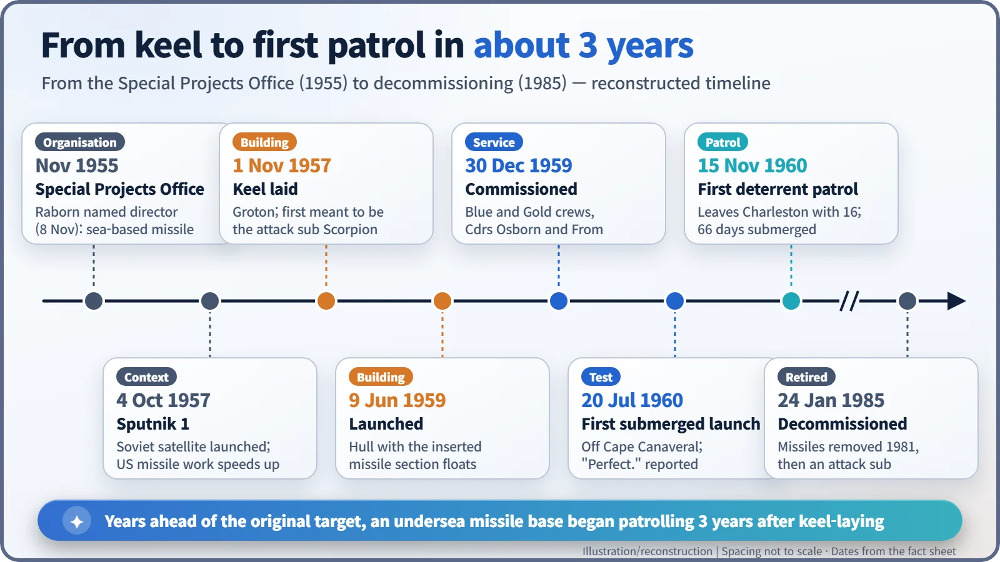

Nuclear History · 161
"From Out of the Deep to Target. Perfect." — USS George Washington and the Birth of the SSBN (1959–1960)
A hull begun as the attack submarine Scorpion was split to take 16 missile tubes, and its reactor let it hide under the sea for weeks.
On 20 July 1960, USS George Washington fired a Polaris missile while submerged off Cape Canaveral, the first ballistic missile ever launched from a submarine underwater. She had begun life as an attack submarine, cut in two so that a 16-tube missile section could be slotted in, and her nuclear reactor let her stay hidden for weeks. Her first deterrent patrol began just three years after her keel was laid.
A message from under the sea
On 20 July 1960 a short naval message was addressed to President Dwight D. Eisenhower. It came from a submarine lying submerged on the Atlantic Missile Range off Cape Canaveral, and in true telegraph style it wasted no words: "GEORGE WASHINGTON SENDS X POLARIS X FROM OUT OF THE DEEP TO TARGET X PERFECT." For the first time, a submarine running underwater had launched a ballistic missile. [1]

Why a nuclear submarine became a missile base
By the mid-1950s, American planners worried that land-based missile sites and airfields, whose locations were well known, could be wiped out in a first strike. The answer they reached for was to hide missiles where nobody could find them: under the sea.
That only works if the boat can stay hidden. A diesel submarine had to come up for air regularly to run its engines and recharge its batteries. A submarine with a nuclear reactor, which makes heat without any oxygen, could stay submerged for weeks. Nuclear propulsion did not just make a faster ship; it made a ship that could disappear.
In late 1955 the Chief of Naval Operations, Admiral Arleigh Burke, set up the Navy's Special Projects Office and put Rear Admiral William F. "Red" Raborn (1905–1990) in charge. Raborn was appointed director on 8 November 1955, although one participant's memoir dates the office's creation to December. In December 1956 the solid-fuel Polaris missile programme was approved. Then, on 4 October 1957, the Soviet Union launched Sputnik 1, and Washington's sense of urgency rose sharply. [2] [5]
Cutting a nearly new submarine in two
Designing a new submarine from scratch would take years, so the Navy made a bold shortcut. At General Dynamics' Electric Boat yard in Groton, Connecticut, a hull had been laid down on 1 November 1957 as the attack submarine Scorpion (SSN-589). That hull was taken over: it was split, and a complete section holding 16 missile tubes was inserted between the two halves. The Navy's official ship history (DANFS) gives the inserted section as about 130 feet (roughly 40 m); a memoir by one of the engineers involved says 133 feet. [1] [2]

The Skipjack-class design she started from was about 76.7 m (251 ft 8 in) long; the finished George Washington measured about 116.3 m (381 ft 7 in). The reactor, a single S5W pressurized water reactor, and the engine room stayed exactly as designed. The proven "heart" was left alone; only the body was stretched. The boat was renamed after the first US president, and the name Scorpion passed to a new hull laid down later — the same Scorpion that was lost in the Atlantic in 1968. [3] [4]
George Washington was launched on 9 June 1959, sponsored by the wife of Treasury Secretary Robert B. Anderson, and commissioned on 30 December 1959.

One boat, two crews
George Washington had two complete crews, called "Blue" and "Gold". At commissioning, Commander James B. Osborn led the Blue crew and Commander John L. From Jr. the Gold. While one crew was out on patrol, the other rested and trained ashore. The ship stayed at sea longer without wearing out the people — a way of operating that made sense for a boat that never needed to stop for fuel, and one that is still used today.
On 20 July 1960 the first submerged launch succeeded, and less than two hours later a second missile came down in the target area about 1,100 miles (about 1,770 km) away. The originator box of the message quoted above carries Osborn's name. [1]

On 15 November 1960 George Washington left Charleston, South Carolina, with 16 Polaris A1 missiles on her first deterrent patrol. She returned to New London on 21 January 1961 after 66 days submerged. On a deterrent patrol the boat stayed hidden, quiet and ready for weeks at a time. From 25 April 1961 she patrolled from Holy Loch in Scotland, the two crews taking turns. Three years had passed from keel-laying to first patrol — years ahead of the timetable originally set for the programme. [1] [2]

The legacy of a deterrent that could hide
George Washington was the first of 41 US Polaris submarines. Ballistic missile submarines — SSBN in Navy shorthand, for a nuclear-powered (N) ship (SS) carrying ballistic (B) missiles — went on to form one leg of the nuclear "triad", alongside land-based missiles and strategic bombers, and they came to be regarded as the most survivable leg because they are so hard to find. How to judge deterrence strategy remains a matter of debate, but it is clear that a reactor under the sea gave rise to a new Cold War logic: the invisible base. The Soviet Union, Britain and France would each build ballistic missile submarines of their own. [2]
In 1981 George Washington's missiles were removed and she served on as an attack submarine until she was decommissioned on 24 January 1985. She marked the moment nuclear power became part of national strategy with a message only a few words long. [3]